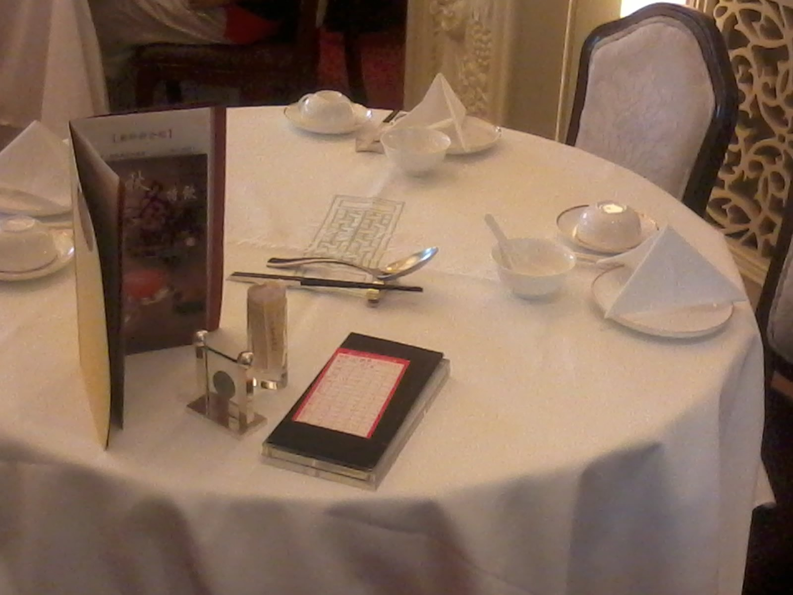
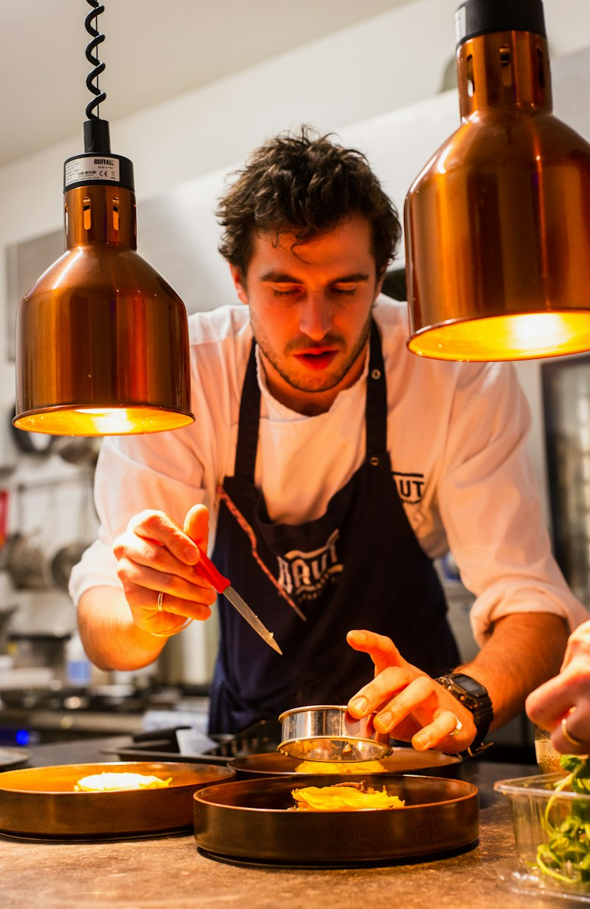
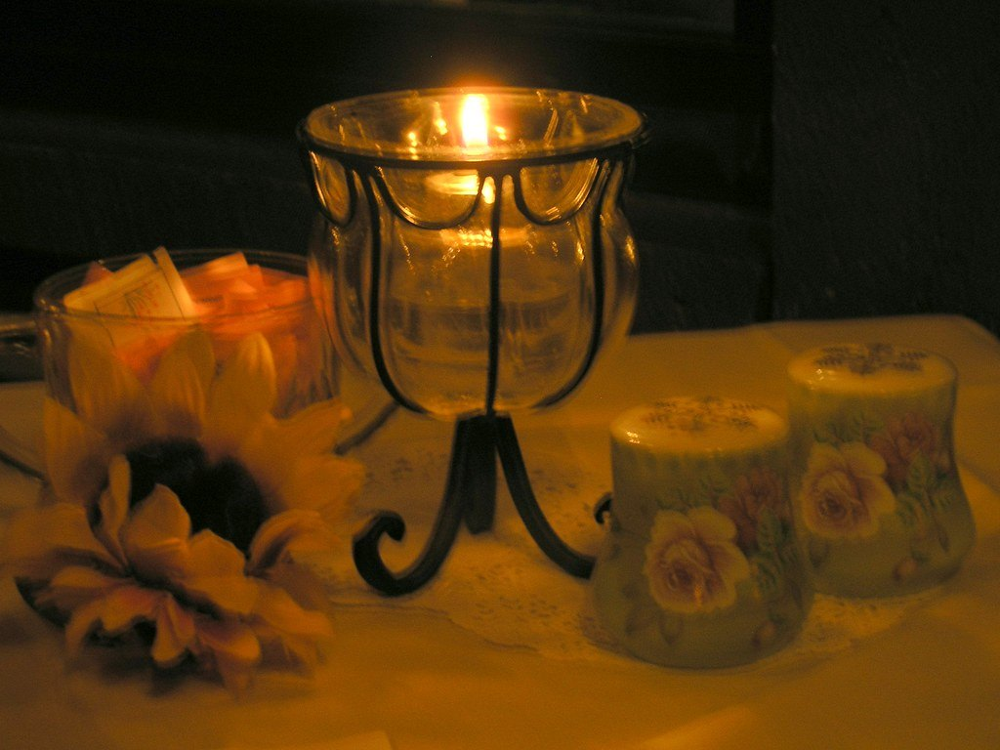
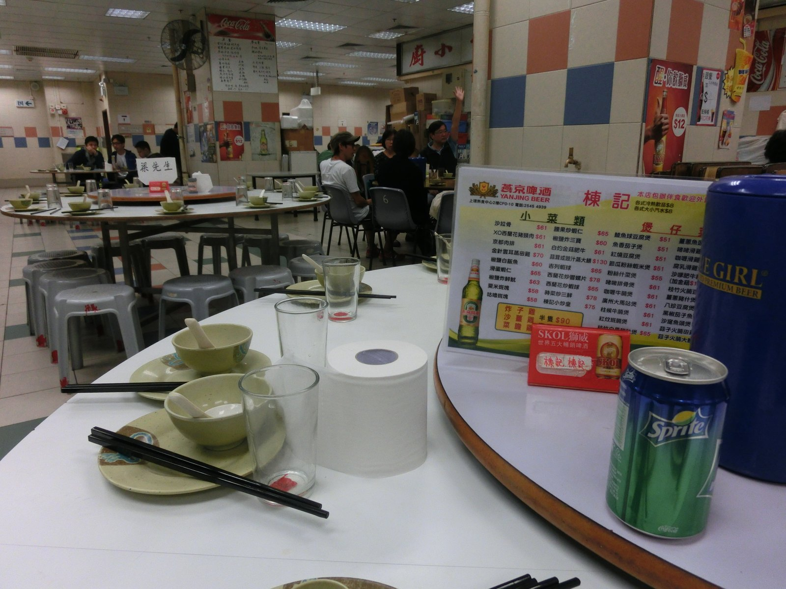
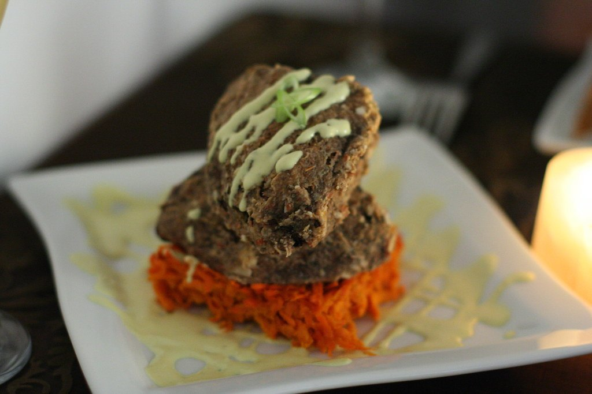
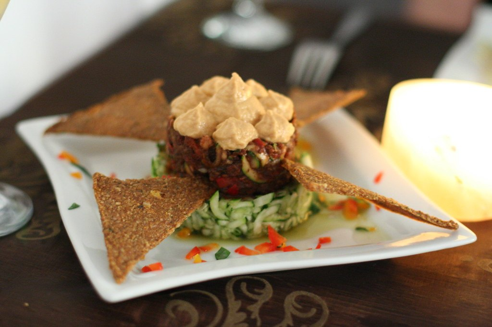
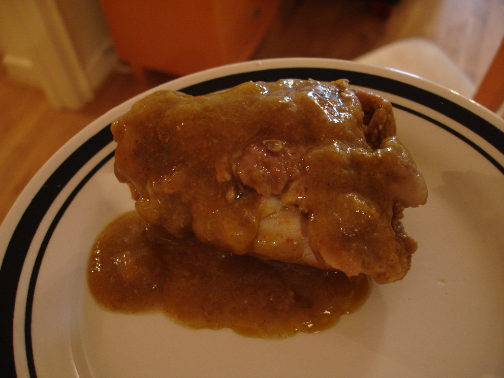
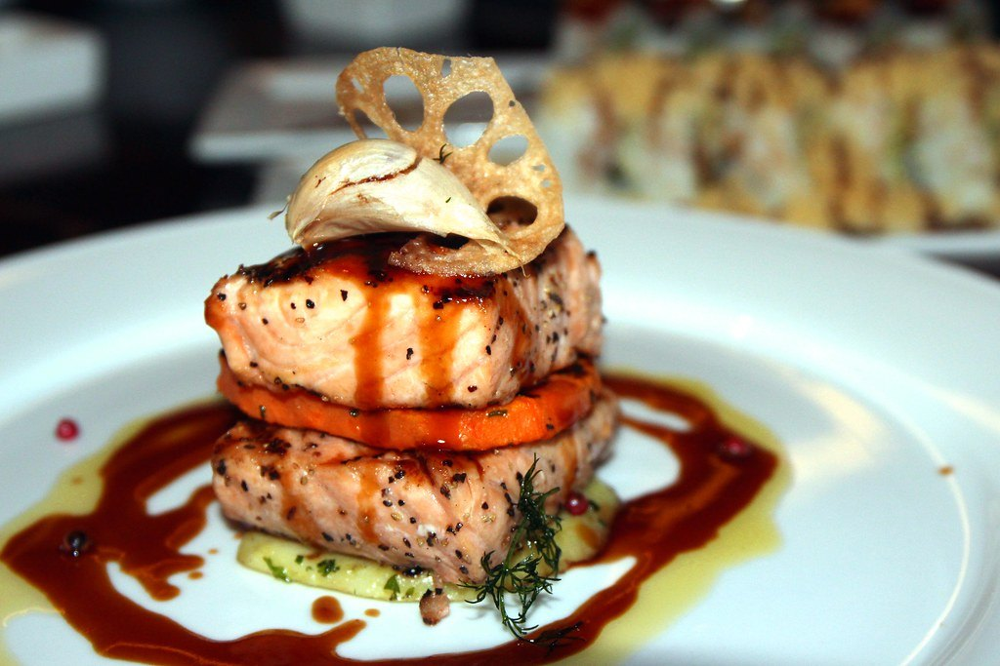
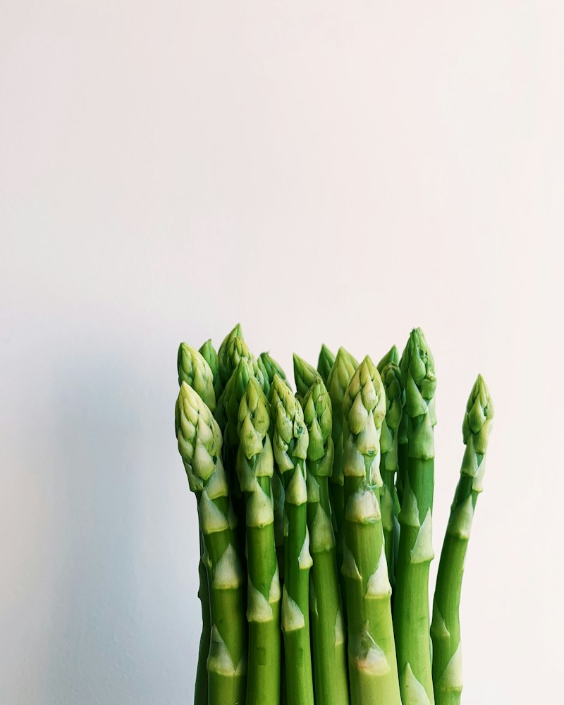

This week’s crate
Delicata, chanterelles, Suncrisp apples.
An editorial, event-first way into our table — this month: fire, fungi and orchard fruit.
Discover Our Story

This month
Fire · Fungi · Orchard Fruit
60 mi
Sourcing radius
14
Partner producers
4
Menus a year
1
Long table
The Journal
A slower, story-led homepage: what’s ripening, who grew it, and how Elena cooks it over fire.
Know Your FarmersDelicata, chanterelles, Suncrisp apples.

“Seasonal cooking is about listening.”



Demo · Autumn

Demo · Vegetarian

Demo · Vegan option

Demo · Dessert
"The seasonal menu made every visit feel completely different."
"A beautiful evening from the first bite to the final course."
4.9 ★ from demo regulars
Fictional rating for illustration.
Join ThemSourcing
Within 60 miles — the growers, pickers and makers we cook with every week.

Green Valley · 12 mi
Greens, roots & Delicata squash for the autumn table.

Orchard Lane · 8 mi
Suncrisp apples & orchard fruit for tarts and pours.

Meadow & Dairy · 22 mi
Mushrooms, herbs & aged cheese, picked at dawn.
Pick a date on the Supper Club page and reserve — seats are communal.
Tell us at booking; the kitchen adapts every course.
Autumn Supper Club · Fri & Sat
Five courses, 14 partner growers, one communal table. Reserve your seat before the season turns.
Vegetarian, vegan & gluten-free every night — note needs at booking.